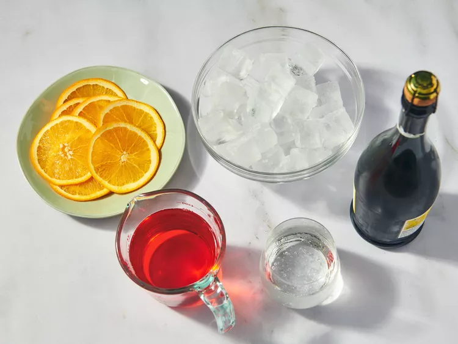
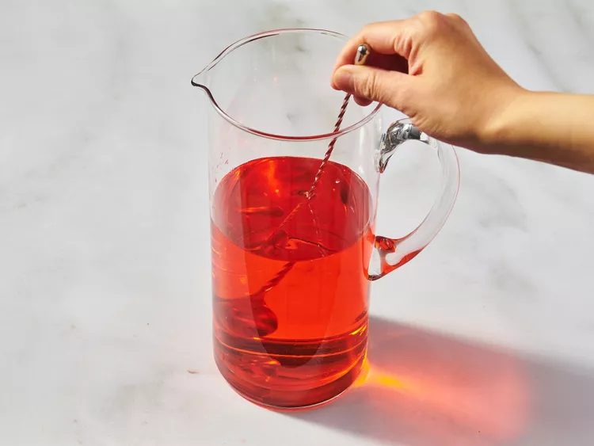

Aperol Spritz
Description
Ingredients:
- 1 (750 mL) bottle chilled Prosecco
- 2 cups Aperol
- 1 cup chilled sparkling water
- ice as needed
- 8 slices orange
Step 1
Gather the ingredients.

Step 2
Stir Prosecco, Aperol, and sparkling water together in a large pitcher.

Step 3
Serve immediately in ice-filled glasses; garnish with orange slices.
Home